경산중 1
y=ax²의 계수 부호/크기와 개형 및 대칭축을 비교한다.
HOLD: item_level_unit_live_family_generator_rule_and_prerequisite_review_pending; source_custody_rights_permission_pending; canonical_text_product_render_review_pending
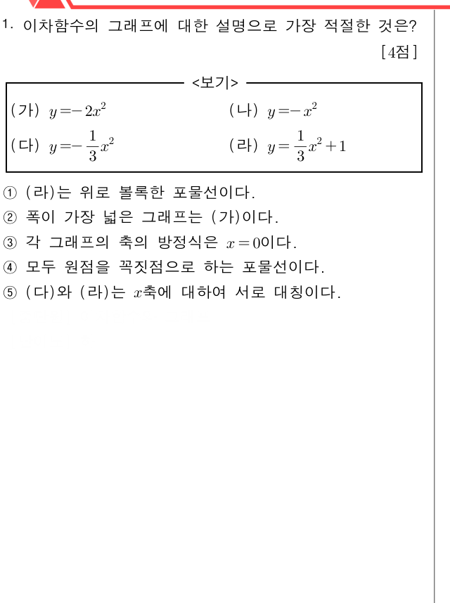
학년·방법·권리 보류를 승인으로 읽지 마세요. 새 쌍둥이는 이 패킷에서 제작하지 않았습니다.
y=ax²의 계수 부호/크기와 개형 및 대칭축을 비교한다.
HOLD: item_level_unit_live_family_generator_rule_and_prerequisite_review_pending; source_custody_rights_permission_pending; canonical_text_product_render_review_pending

y=ax²+q의 축과 꼭짓점, 이동 방향을 읽는다.
HOLD: item_level_unit_live_family_generator_rule_and_prerequisite_review_pending; source_custody_rights_permission_pending; canonical_text_product_render_review_pending
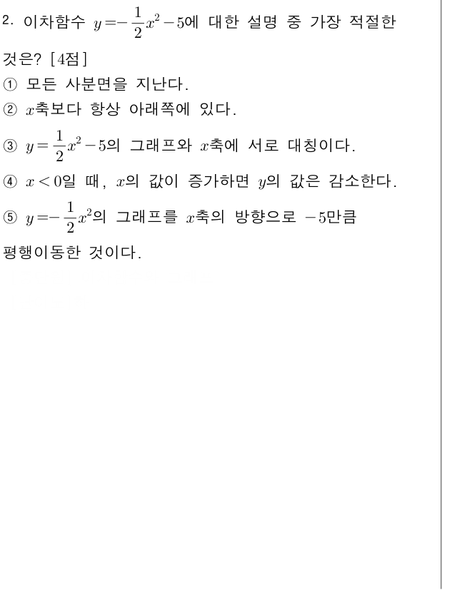
평행이동으로 유지되는 이차항 계수를 비교한다.
HOLD: item_level_unit_live_family_generator_rule_and_prerequisite_review_pending; source_custody_rights_permission_pending; canonical_text_product_render_review_pending
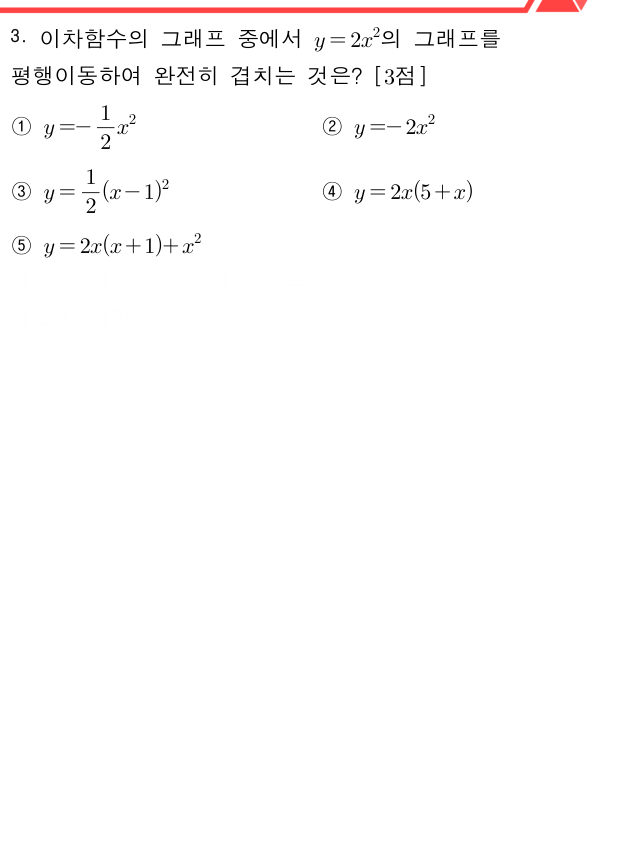
꼭짓점형에서 축의 x좌표를 읽어 비교한다.
HOLD: item_level_unit_live_family_generator_rule_and_prerequisite_review_pending; source_custody_rights_permission_pending; canonical_text_product_render_review_pending
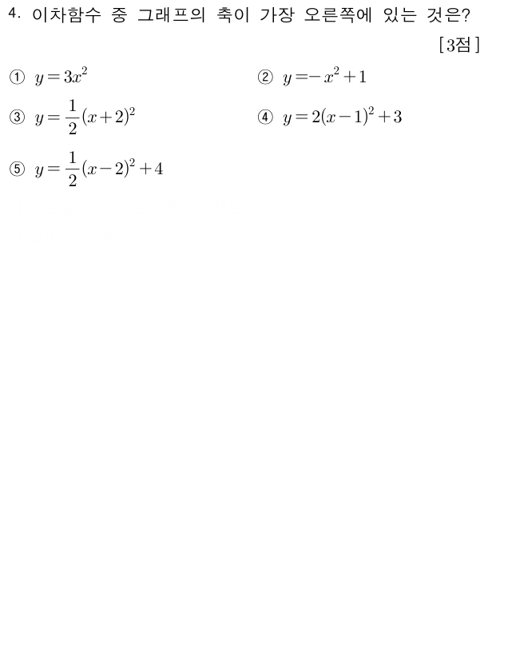
x축 접촉과 축 및 y절편 조건을 꼭짓점형에 대입한다.
HOLD: item_level_unit_live_family_generator_rule_and_prerequisite_review_pending; source_custody_rights_permission_pending; canonical_text_product_render_review_pending
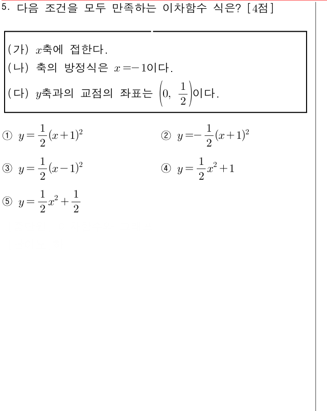
매개변수로 나타낸 꼭짓점을 주어진 직선식에 대입한다.
HOLD: item_level_unit_live_family_generator_rule_and_prerequisite_review_pending; source_custody_rights_permission_pending; canonical_text_product_render_review_pending
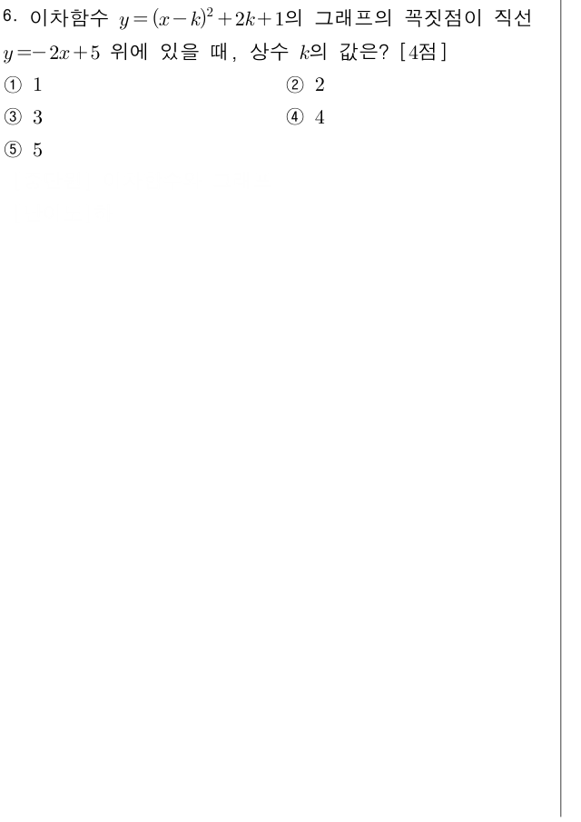
일차함수의 기울기/절편 부호에서 이차함수 꼭짓점의 사분면을 읽는다.
HOLD: item_level_unit_live_family_generator_rule_and_prerequisite_review_pending; source_custody_rights_permission_pending; canonical_text_product_render_review_pending
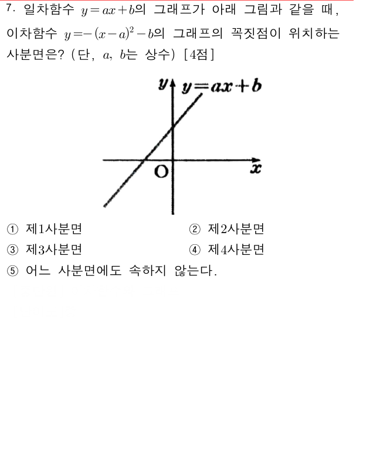
아래로 열린 포물선의 증가 구간과 대칭축을 연결한다.
HOLD: item_level_unit_live_family_generator_rule_and_prerequisite_review_pending; source_custody_rights_permission_pending; canonical_text_product_render_review_pending
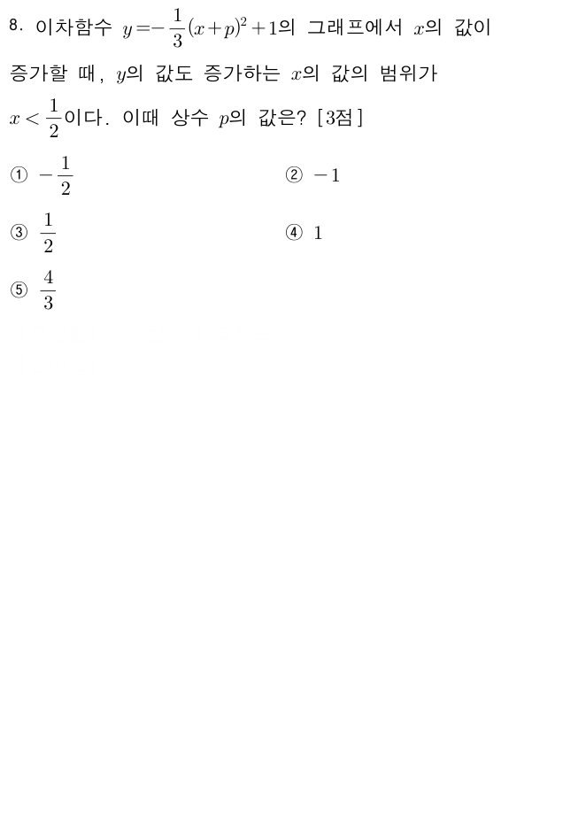
꼭짓점 좌표에서 원점까지의 두 이동량의 부호를 읽는다.
HOLD: item_level_unit_live_family_generator_rule_and_prerequisite_review_pending; source_custody_rights_permission_pending; canonical_text_product_render_review_pending
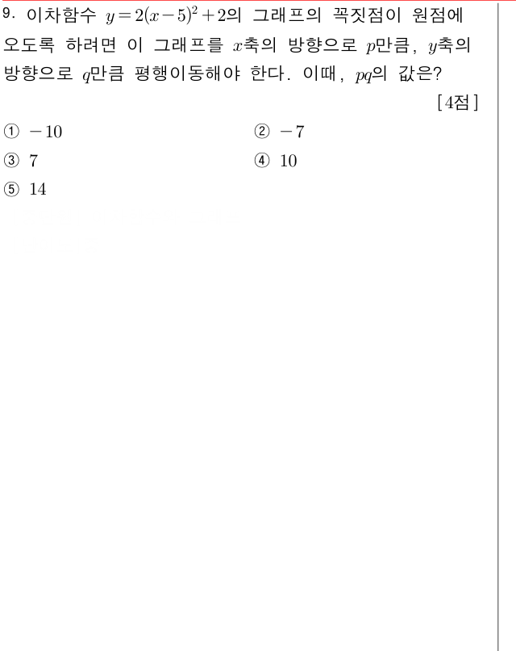
그래프의 개형/꼭짓점/절편에서 계수 조합의 부호를 판정한다.
HOLD: item_level_unit_live_family_generator_rule_and_prerequisite_review_pending; source_custody_rights_permission_pending; canonical_text_product_render_review_pending; specific_grade_method_risk
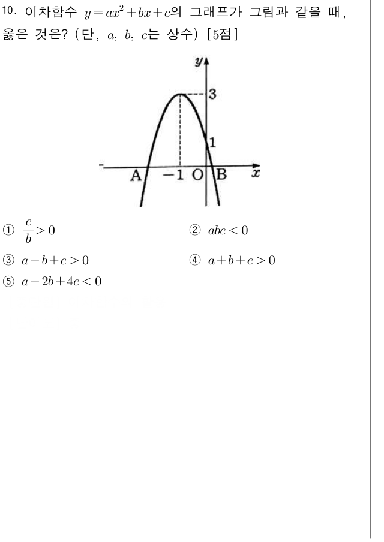
꼭짓점형의 개형과 축/절편으로 각 사분면 존재 조건을 점검한다.
HOLD: item_level_unit_live_family_generator_rule_and_prerequisite_review_pending; source_custody_rights_permission_pending; canonical_text_product_render_review_pending; specific_grade_method_risk
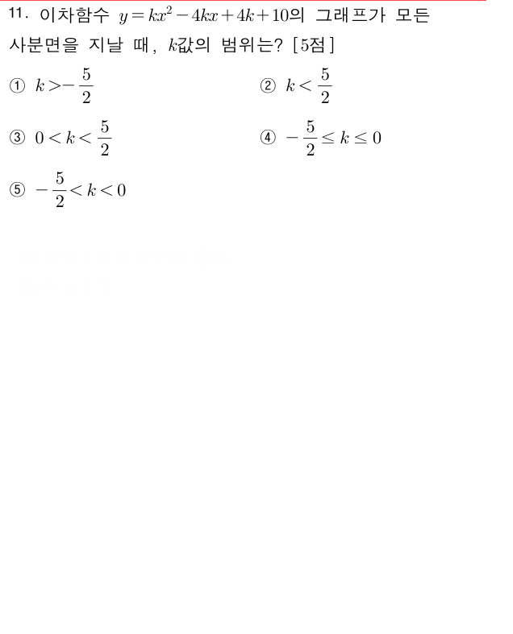
포물선의 축/절편과 같은 높이 삼각형의 넓이 이등분점을 이용한다.
HOLD: item_level_unit_live_family_generator_rule_and_prerequisite_review_pending; source_custody_rights_permission_pending; canonical_text_product_render_review_pending; unlabelled_bitmap_marks_not_extra_mathematical_givens_rebuild_from_explicit_conditions; specific_grade_method_risk
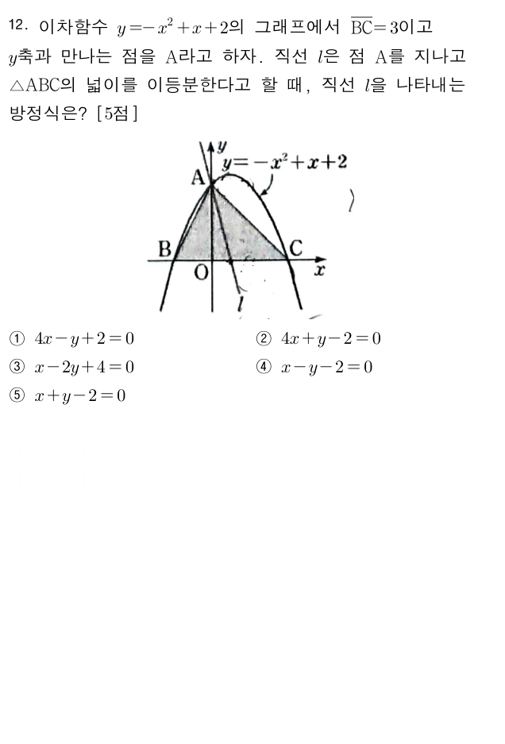
직각삼각형에서 cos의 인접변/빗변 대응을 읽는다.
HOLD: item_level_unit_live_family_generator_rule_and_prerequisite_review_pending; source_custody_rights_permission_pending; canonical_text_product_render_review_pending
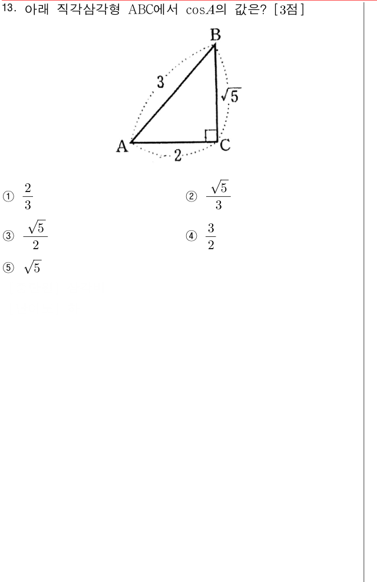
직각삼각형의 두 예각에서 sin/cos/tan의 해당 변을 읽는다.
HOLD: item_level_unit_live_family_generator_rule_and_prerequisite_review_pending; source_custody_rights_permission_pending; canonical_text_product_render_review_pending
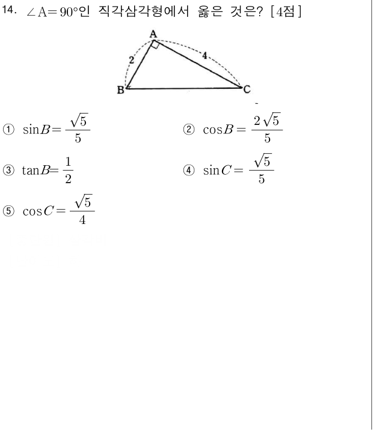
이차방정식의 근을 길이비로 해석하고 직각삼각형을 구성한다.
HOLD: item_level_unit_live_family_generator_rule_and_prerequisite_review_pending; source_custody_rights_permission_pending; canonical_text_product_render_review_pending; specific_grade_method_risk
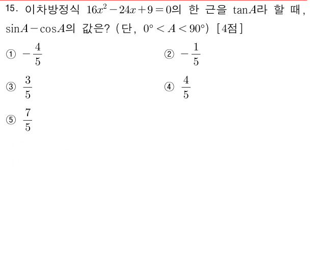
특수각 및 90도의 삼각비를 대입하여 주어진 산식을 계산한다.
HOLD: item_level_unit_live_family_generator_rule_and_prerequisite_review_pending; source_custody_rights_permission_pending; canonical_text_product_render_review_pending
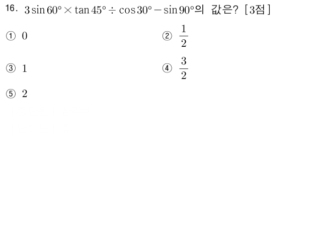
빗변에 내린 수선과 두 예각의 대응을 직각삼각형으로 읽는다.
HOLD: item_level_unit_live_family_generator_rule_and_prerequisite_review_pending; source_custody_rights_permission_pending; canonical_text_product_render_review_pending
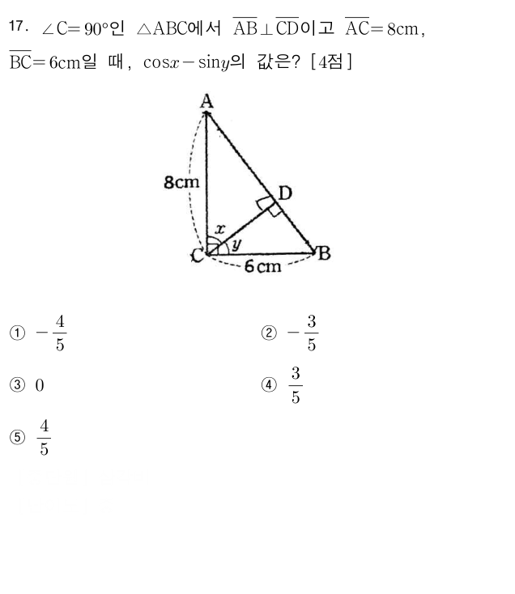
세 내각의 비와 내각 합으로 특수각의 삼각비를 읽는다.
HOLD: item_level_unit_live_family_generator_rule_and_prerequisite_review_pending; source_custody_rights_permission_pending; canonical_text_product_render_review_pending
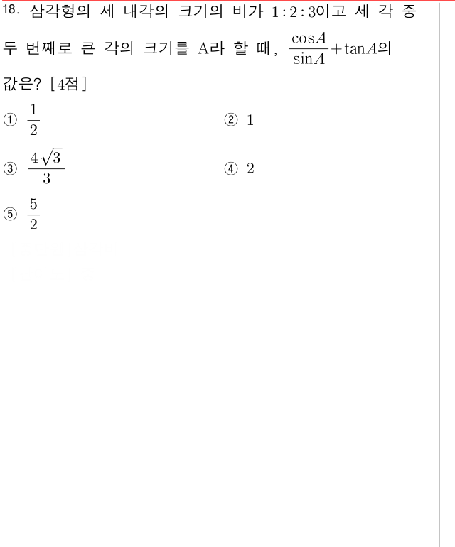
같은 길이와 직사각형 조건을 이용하여 30도 삼각형의 부분 길이를 구성한다.
HOLD: item_level_unit_live_family_generator_rule_and_prerequisite_review_pending; source_custody_rights_permission_pending; canonical_text_product_render_review_pending
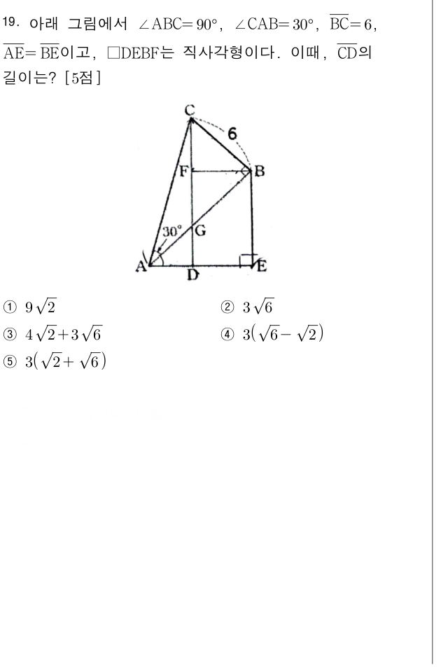
접점의 수직 반지름과 60도 직각삼각형을 이용하여 접선식을 구성한다.
HOLD: item_level_unit_live_family_generator_rule_and_prerequisite_review_pending; source_custody_rights_permission_pending; canonical_text_product_render_review_pending; specific_grade_method_risk
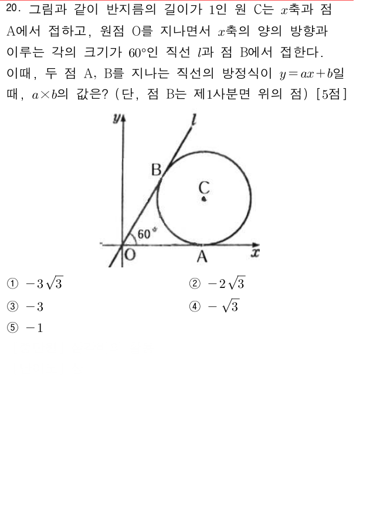
사분원에 표시된 수선/접선 길이를 이용하여 두 비의 값을 읽는다.
HOLD: item_level_unit_live_family_generator_rule_and_prerequisite_review_pending; source_custody_rights_permission_pending; canonical_text_product_render_review_pending
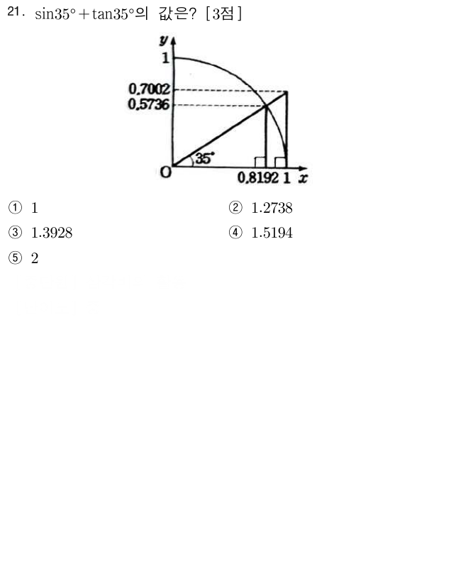
사분원 안의 점/수선/접선에서 각과 해당 선분의 대응을 비교한다.
HOLD: item_level_unit_live_family_generator_rule_and_prerequisite_review_pending; source_custody_rights_permission_pending; canonical_text_product_render_review_pending
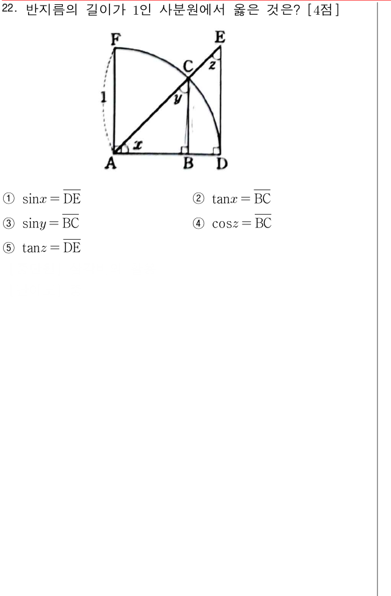
두 건물 사이 수평 거리와 올려봄/내려봄 각으로 두 높이의 합을 구성한다.
HOLD: item_level_unit_live_family_generator_rule_and_prerequisite_review_pending; source_custody_rights_permission_pending; canonical_text_product_render_review_pending; historical_key_independent_solver_disagreement_pending_new_independent_solve; unlabelled_bitmap_marks_not_extra_mathematical_givens_rebuild_from_explicit_conditions
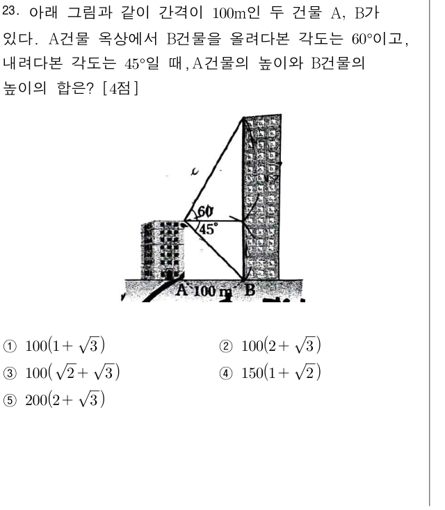
두 직각삼각형의 특수각과 교점을 이용하여 겹친 삼각형의 넓이를 구성한다.
HOLD: item_level_unit_live_family_generator_rule_and_prerequisite_review_pending; source_custody_rights_permission_pending; canonical_text_product_render_review_pending; specific_grade_method_risk
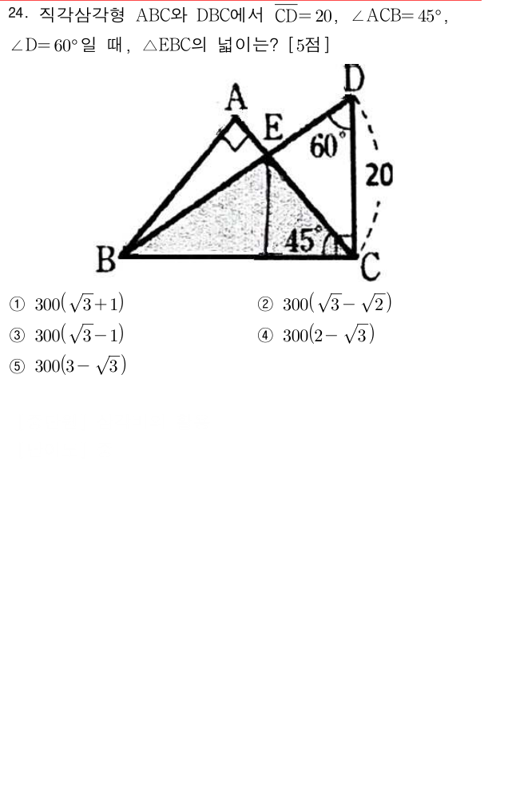
접기 전후 같은 길이와 직각삼각형을 이용하여 부분 넓이를 구성한다.
HOLD: item_level_unit_live_family_generator_rule_and_prerequisite_review_pending; source_custody_rights_permission_pending; canonical_text_product_render_review_pending; specific_grade_method_risk
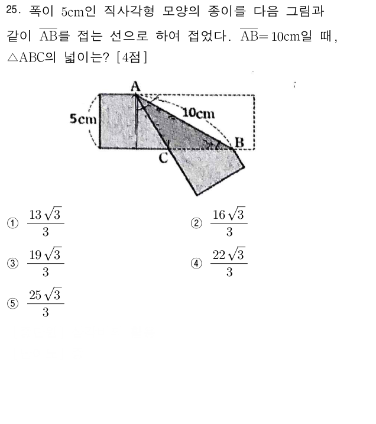